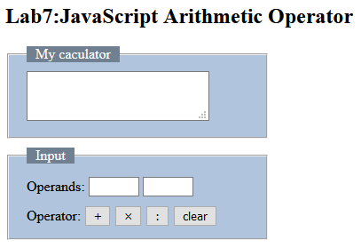
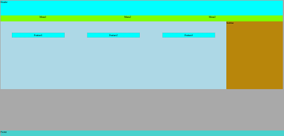
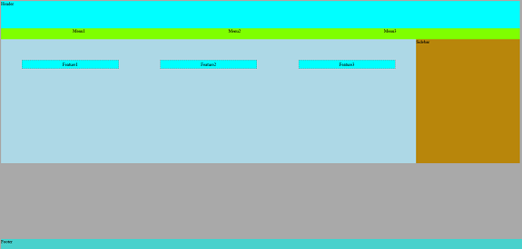

link to caculator repository
link to chapter2 case1 repository
link to project2 repository
link to mini project1 repository
link to flex box repository
link to chapter5 case1 repository
link to chapter3 case1 repository
link to chapter1 case1 repository
You can click the following link or the thumbnail image to link to each project Gitub page
link to Github page:yang xirui caculator 
link to Github page: yang xirui chapter1 case1  link to Github page: yang xirui chapter3 case1
link to Github page: yang xirui chapter3 case1  link to Github page: yang xirui chapter5 case1
link to Github page: yang xirui chapter5 case1  link to Github page: yang xirui project2
link to Github page: yang xirui flex box 
link to Github page: yang xirui chapter2 case1
link to Github page: yang xirui project2
link to Github page: yang xirui flex box 
link to Github page: yang xirui chapter2 case1 link to Github page: yang xirui mini project1
link to Github page: yang xirui mini project1